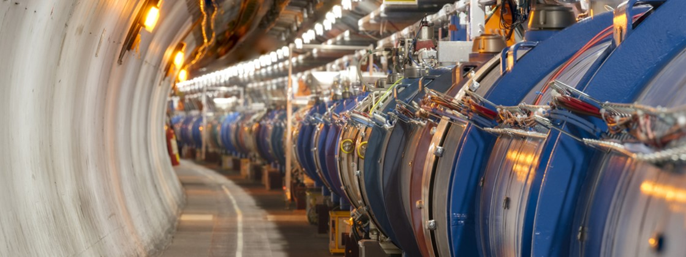

by Anthony
Postado em 1 de Janeiro, de 2019 às 12:00
O Grande Colisor de Hádrons (português brasileiro) ou (em inglês: Large Hadron Collider) - LHC da Organização Europeia para a Pesquisa Nuclear, é o maior acelerador de partículas e o de maior energia existente do mundo. Seu principal objetivo é obter dados sobre colisões de feixes de partículas, tanto de prótons a uma energia de 7 TeV (1,12 microjoules) por partícula, ou núcleos de chumbo a energia de 574 TeV (92,0 microjoules) por núcleo. O laboratório localiza-se em um túnel de 27 km de circunferência, bem como a 175 metros abaixo do nível do solo na fronteira franco-suíça, próximo a Genebra, Suíça.
Os primeiros testes duram apenas uma fração de segundo, onde as partículas somente podem dar meia-volta ou uma volta em torno do anel do acelerador. A circulação de partículas no gigantesco equipamento começará em um primeiro momento em baixa energia, com 450 GeV, e quando os cientistas injetarem feixes em direções opostas se produzirão, a essa velocidade, as primeiras colisões. A partir de então, o experimento consistirá em ir aumentando progressivamente a potência da circulação dos prótons, até chegar ao momento mais esperado e temido por alguns: as primeiras colisões de partículas a velocidade próxima à da luz, cujos primeiros cálculos apontam para que possa ocorrer dois meses após seu religamento.
Um dos principais objetivos do LHC é tentar explicar a origem da massa das partículas elementares e encontrar outras dimensões do espaço, entre outras coisas. Uma dessas experiências envolve a partícula bóson de Higgs. Caso a teoria dos campos de Higgs estiver correta, ela será descoberta pelo LHC. Procura-se também a existência da supersimetria. Experiências que investigam a massa e a fraqueza da gravidade serão um equipamento toroidal do LHC e do Solenoide de Múon Compacto (CMS). Elas irão envolver aproximadamente 2 mil físicos de 35 países e dois laboratórios autónomos — o JINR (Joint Institute for Nuclear Research) e o CERN. Com o LHC também haverá pesquisas de novos eventos físicos.
Alguns cientistas acreditam que este equipamento pode provocar uma catástrofe de dimensões globais, como um buraco negro que acabaria por destruir a Terra. Para tanto, corre um processo num tribunal do Havaí tentando impedir a experiência, até que haja uma total comprovação de que não haja riscos. Outros acusam o CERN de não ter realizado os estudos de impacto ambiental necessários. No entanto, apesar das alegações de uma suposta criação de um buraco negro, o que de fato poderia ocorrer seria a formação de strange quarks, possibilitando uma reação em cadeia e gerando a matéria estranha; esta possui a característica de converter a matéria ordinária em matéria estranha, logo gerando uma reação em cadeia na qual todo o planeta seria transformado em uma espécie de matéria estranha.